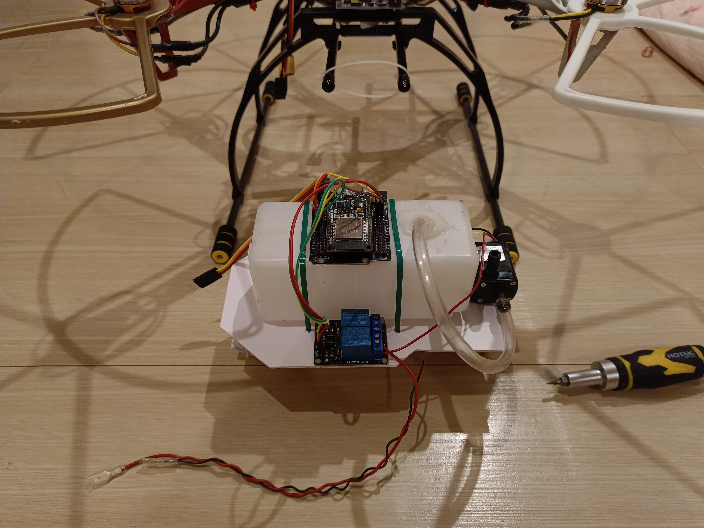
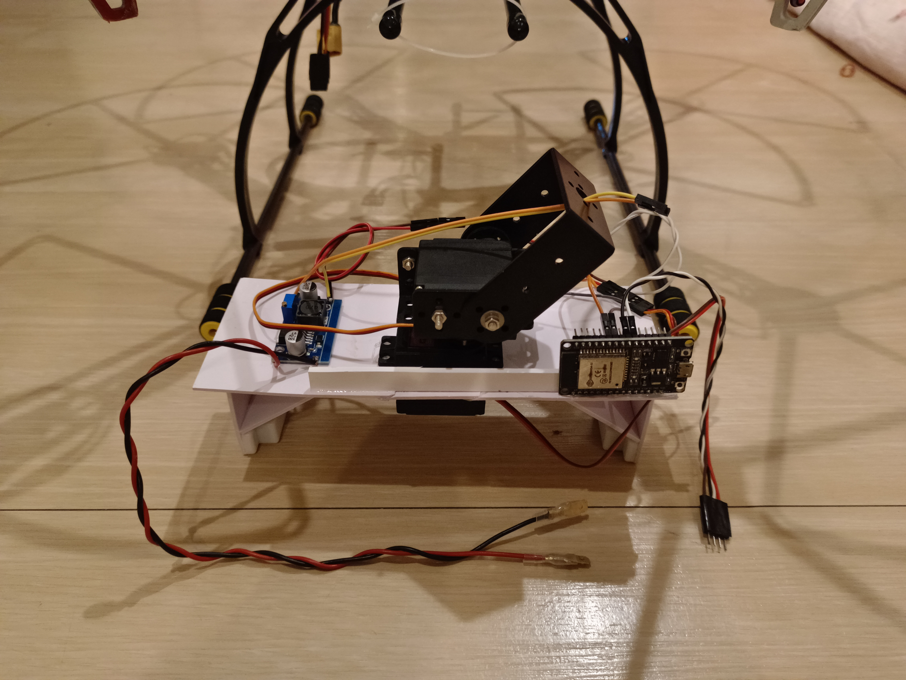
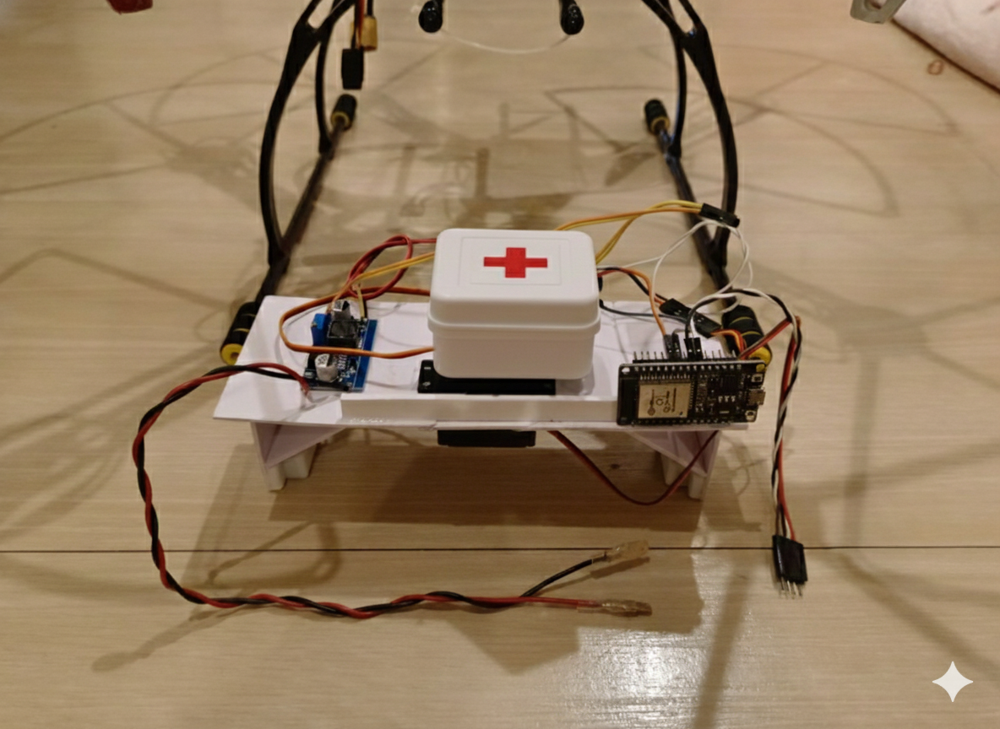

แนวคิดของโครงการ
ระบบนี้ถูกออกแบบสำหรับผู้ใช้ 3 กลุ่ม ได้แก่ ผู้ใช้งานโดรนที่ต้องสลับภารกิจในภาคสนาม, นักพัฒนาที่ดูแล Flight Core ให้มีเสถียรภาพและข้อกำหนดด้านความปลอดภัยคงที่, และผู้สร้างโมดูลที่พัฒนาระบบภารกิจเป็น subsystem แยกจากแกนหลัก โครงการนี้ถูกสร้างขึ้นมาเพื่อแก้ปัญหา โดรนแบบเดิมที่เมื่อเปลี่ยน payload/อุปกรณ์ภายนอก มักต้องแก้เฟิร์มแวร์หลักจนเกิดหลายเวอร์ชัน ทดสอบยากและเสี่ยงต่อความเสถียรของการบิน จึงเหมาะกับสถานการณ์ที่ภารกิจเปลี่ยนบ่อย เช่น เกษตร/กล้อง/สำรวจ/งานเฉพาะทาง โดยที่ตัวลำและ Flight Core ควร “คงเดิม” ส่วนความสามารถภารกิจย้ายไปอยู่ที่โมดูล เหตุผลที่ออกแบบเป็น ecosystem คือเพื่อให้มาตรฐานการเชื่อมต่อ การค้นพบ และความหมายของคำสั่งเป็นแบบเดียวกัน ทำให้โมดูลจากหลายผู้พัฒนาใช้งานร่วมกันได้ โดยไม่ย้อนกลับไปแก้แกนหลักทุกครั้ง แนวคิด socket module จึงเป็นขอบเขตระบบที่ทำให้โมดูลประกาศตัวตน/ความสามารถระดับแนวคิด แล้วให้ Flight Core ทำหน้าที่ route และกำกับความปลอดภัย ขณะที่การควบคุมการบินยังคง deterministic และเสถียร
สรุปโครงการ
โครงการนี้เป็นโดรนที่พัฒนาระบบ Socket Module เพิ่มเติมโดยโมดูลสามารถเสียบใช้งานได้ทันที โดยไม่ต้องแก้ Flight Core ทุกครั้งที่เปลี่ยนภารกิจ ทำให้แกนการบินคงเสถียรเป็นมาตรฐานเดียว และช่วยให้การพัฒนาโมดูลภารกิจสามารถทำได้อย่างอิสระ
จุดเด่นของระบบ
คุณสมบัติระดับสถาปัตยกรรม
Flight Core คงที่
ลดการแก้เฟิร์มแวร์หลักตาม payload และลดความเสี่ยง regression
โมดูลเป็น Subsystem
แยกส่วนภารกิจออกจากการบิน ทำให้พัฒนา/ทดสอบ/สลับภารกิจได้เร็ว
Self-Describing
ประกาศ “ตัวตน + ความสามารถของ Module” เพื่อให้ระบบจัดการได้อัตโนมัติ
การสื่อสารเน้นความเสถียร
กลไกยืนยัน/ลองใหม่แบบมีขอบเขต โดยต่อย่อดมาจาก Protocol (CRC16-CCITT)
แยกระบบไฟ
แยกไฟ Logic และ Payload เพื่อลดผลกระทบต่อ Flight core
รองรับ Ecosystem
รองรับโมดูลจากหลายผู้พัฒนา ภายใต้ข้อกำหนดเดียวกัน
ปัญหาของโดรนแบบเดิม
การแก้เฟิร์มแวร์เมื่อเปลี่ยนอุปกรณ์
เมื่อเปลี่ยน payload หรืออุปกรณ์ภายนอก มักต้องแก้ตรรกะ/การจัดการความปลอดภัยในเฟิร์มแวร์หลัก ส่งผลให้เกิดหลายเวอร์ชัน ทดสอบยาก และเพิ่มความเสี่ยงต่อความเสถียรของการบิน
ข้อจำกัดของโดรนเชิงภารกิจแบบตายตัว
โดรนจำนวนมากถูกออกแบบให้เหมาะกับภารกิจเดียว การเปลี่ยนภารกิจมักต้องเปลี่ยนทั้งลำหรือสร้างระบบใหม่ ทำให้ไม่สามารถใช้เป็น “แพลตฟอร์มร่วม” ได้
สถาปัตยกรรมระบบ
โครงสร้าง: รีโมท → โดรน → โมดูล โดยรีโมทส่งความตั้งใจผู้ใช้และคำสั่งภารกิจ, Flight Core ตรวจสอบ/กำกับความปลอดภัย และ route ไปยังโมดูล, โมดูลทำงานภารกิจและส่งสถานะกลับเพื่อการแสดงผล/บันทึก
Telemetry/Status ← โมดูล ← Flight Core (Aggregation) ← รีโมท/บันทึกข้อมูล
แนวคิด Socket Module
Plug-and-play
โมดูลถูกออกแบบให้เชื่อมต่อเข้าระบบได้ตามมาตรฐานเดียวกัน และใช้งานได้โดยไม่ต้องแก้ Flight Core
โมดูลเป็น subsystem แยกจาก flight core
Flight Core คุมการบินและ safety gating ส่วนโมดูลรับผิดชอบภารกิจภายใต้ขอบเขตความสามารถที่ประกาศไว้
โมดูลแบบอธิบายตัวเอง (Self-describing Module)
โมดูลประกาศ “ตัวตน + แผนที่ความสามารถ” เพื่อให้ระบบรู้ว่ารองรับฟังก์ชันประเภทใด โดยหน้าเว็บนี้ใช้ตัวอย่างเชิงแนวคิดและปกปิดค่าที่ใช้จริง
ตัวอย่างเชิงแนวคิด
Module Identity = [REDACTED]
Capability Map = [ABSTRACTED TYPES ONLY]ประเภทความสามารถ (ตัวอย่าง)
- ช่วงค่า (Range) เช่น 0–180 สำหรับมุมเซอร์โว
- สถานะ (Boolean) เช่น เปิด/ปิด
- ไม่มีฟังก์ชัน สำหรับช่องที่ไม่ได้ใช้งาน
ความเสถียรของการสื่อสาร
ระบบยึดแนวคิดการสื่อสารที่ตรวจสอบได้ เพื่อป้องกันคำสั่งผิดพลาดและลดความเสี่ยงจากการเชื่อมต่อที่ไม่เสถียร
Serial Protocol
มีโครงสร้างการส่งข้อมูลเป็นเฟรมเพื่อแยกคำสั่ง/ข้อมูล (ไม่เปิดโครงสร้างจริง)
CRC16
ตรวจสอบความถูกต้องของข้อมูลก่อนนำไปใช้ ลดผลกระทบจากสัญญาณรบกวน
ACK / NACK
กลไกตอบรับเพื่อยืนยันการรับส่ง และรองรับการลองใหม่แบบมีขอบเขต
Timeout / Retry
กำหนดเวลารอและการลองใหม่แบบจำกัด เพื่อให้พฤติกรรมระบบคาดเดาได้
Failsafe
เมื่อโมดูลผิดปกติ ระบบสามารถลดระดับภารกิจได้ โดยยังคงความปลอดภัยการบิน
State Handling
จัดการการเชื่อมต่อแบบสถานะเพื่อลดพฤติกรรมไม่กำหนดแน่ชัด
ความปลอดภัยและระบบไฟ
แยกไฟ Logic และ Payload
แยกไฟเลี้ยง Logic ออกจากไฟ Payload เพื่อลดการรบกวนข้ามโดเมน และลดโอกาสที่โหลดภารกิจจะกระทบระบบควบคุมหลัก
แนวคิดการตัดไฟโมดูลเมื่อผิดปกติ (อนาคต)
วางสถาปัตยกรรมให้รองรับการแยกความเสียหาย (fault isolation) โดยไม่เปิดเผยรายละเอียดวงจร/เงื่อนไขจริงบนหน้าเว็บ
วิดีโอสาธิต (Videos)
ตัวอย่างการทำงาน/การทดสอบ (นำเสนอระดับภาพรวม ไม่เผยรายละเอียด low-level)
- Test Flight (Camera Module)
- Test Flight (Agriculture Module)
- การเชื่อมต่อ Agriculture Module
- การเชื่อมต่อ Agriculture Module Test บินจริง
- การเชื่อมต่อ Camera Module
ตัวอย่าง Module
ตัวอย่างโมดูลในเชิงแนวคิด

โมดูลเกษตร
ควบคุมปั๊ม / รีเลย์

โมดูลกล้อง
Servo 2 แกน สำหรับควบคุมแกนกล้อง X,Y

Custom Module
พัฒนาโดยผู้ใช้งาน และ หน่วยงานต่างๆ
แผนพัฒนาในอนาคต
UAV
ขยายระบบโมดูลให้รองรับภารกิจ UAV ที่หลากหลายขึ้น
AUV
นำแนวคิด modular ไปสู่ยานใต้น้ำ โดยคงหลักการ subsystem
หุ่นยนต์แบบ Modular Ecosystem
ต่อยอด ecosystem ไปยังระบบหุ่นยนต์และแพลตฟอร์มอื่น
FAQ
คำถามที่พบบ่อย (ปรับให้ปลอดภัยต่อการเผยแพร่)
โมดูลใหม่ต้องแก้ Flight Core ไหม?
เป้าหมายคือไม่ต้องแก้ โดยยึดการประกาศความสามารถและการ route ของระบบภายใต้กติกาเดียวกัน
ทำไมหน้าเว็บไม่เปิดรายละเอียดโปรโตคอล?
เพื่อป้องกันการ reverse ระบบ หน้านี้จึงอธิบายระดับสถาปัตยกรรมเท่านั้น
ระบบรับมือการสื่อสารไม่เสถียรอย่างไร?
ระบบมีแนวคิดตรวจสอบความถูกต้องของข้อมูล และมีแนวทาง failsafe เพื่อคงความปลอดภัยการบิน
ทำไมต้องแยกไฟ Logic กับ Payload?
เพื่อลดการรบกวนข้ามโดเมน และลดโอกาสที่โหลดภารกิจจะกระทบแกนควบคุมหลัก
ผู้ใช้ภายนอกพัฒนาโมดูลเองได้ไหม?
ได้ในเชิงแนวคิด หากทำตามมาตรฐานการประกาศความสามารถและข้อกำหนดด้านความปลอดภัยของระบบ